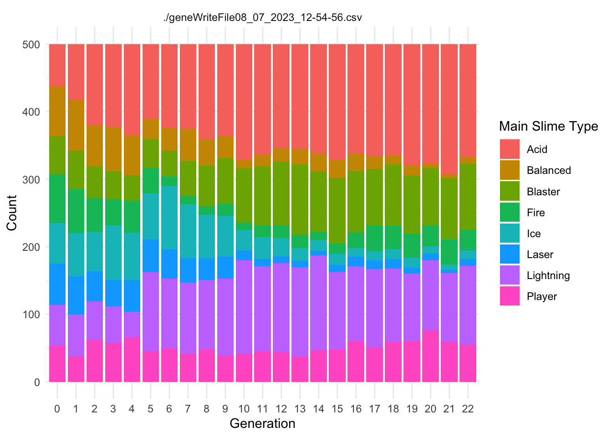
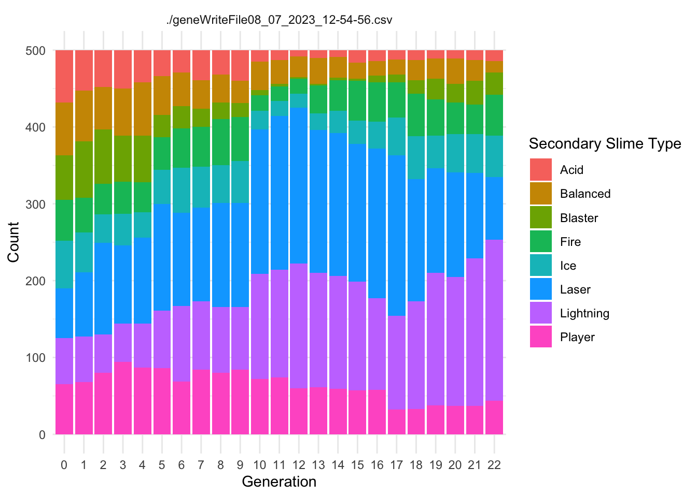

The purpose of this document is to consistently summarize the data from Project TwinStick, allowing us to more consistently test the evolutionary model and gameplay during development.
Data
In this section, we ingest the data from whatever runs are relevant to the analysis. The data are written from the project in .csv files. The following code reads all .csv files from the working directory. It creates new variables for the source file name (file) and the number of offspring produced by each individual (offspring_count). It then appends all the data files into a single data frame called allfiles.
Variables that end in .Gene are the values of the genome for that particular locus. Variables that end in .Trait are the values of the trait for that particular locus.
Experimental Conditions
Use this section to describe the goal of the data collection and the key conditions that define the test.
This test occurred July 21, 2023 and was focused on the new fitness functions implemented by Justin. We are interested in determining whether the fitness functions work correctly.
The conditions were a standard “L” shaped set of walls with four lightning towers. The slimes acquire fitness by getting close to the player using a formula of 50,000 / (path distance +1). For replicates 4-6, Justin corrected the math concerning the ~.Resistance.~ genes.
Slime Types
Each Slime has a Main.Type and a Secondary.Type. These types use the ~.Resistance.~ category to confer resistance to the appropriate damage type. Under certain experimental conditions, we would expect the ~.Type and ~.Resistance.~ genes and traits to evolve in response to the predominant damage type delivered by the player.
The following code creates two summary dataframes with the suffix ~Typecounts that count the number of slimes of each ~.Type in each generation for each replicate. It then creates the graphs of ~Type frequency over time.
Code
MainTypecounts <- allfiles %>%group_by(Main.Type, Generation, file) %>%summarise(Main.count =n(), .groups ="drop")SecondaryTypecounts <- allfiles %>%group_by(Secondary.Type, Generation, file) %>%summarise(Secondary.count =n(), .groups ="drop")ggplot(MainTypecounts, aes(x = Generation, y = Main.count, fill =as.factor(Main.Type))) +geom_col(position ="stack") +labs(x ="Generation", y ="Count", fill ="Main Slime Type") +theme_minimal()+facet_wrap(~file, ncol=2)

Code
ggplot(SecondaryTypecounts, aes(x = Generation, y = Secondary.count, fill =as.factor(Secondary.Type))) +geom_col(position ="stack") +labs(x ="Generation", y ="Count", fill ="Secondary Slime Type") +theme_minimal()+facet_wrap(~file, ncol=2)

Slime Fitness
This section should summarize the behavior of the fitness function. The fitness function calculates a value of 50,000/(distance to player +1). I will also reverse calculate that for visualization.
Code
ggplot(allfiles, aes(x=Wave.Number, y= Player.Distance.Fitness))+geom_point(aes(x=Wave.Number, y= Player.Distance.Fitness, color = offspring_count),alpha =0.1)+geom_smooth()+facet_wrap(~file, ncol =2)+scale_color_continuous(low="blue", high ="red")
`geom_smooth()` using method = 'gam' and formula = 'y ~ s(x, bs = "cs")'